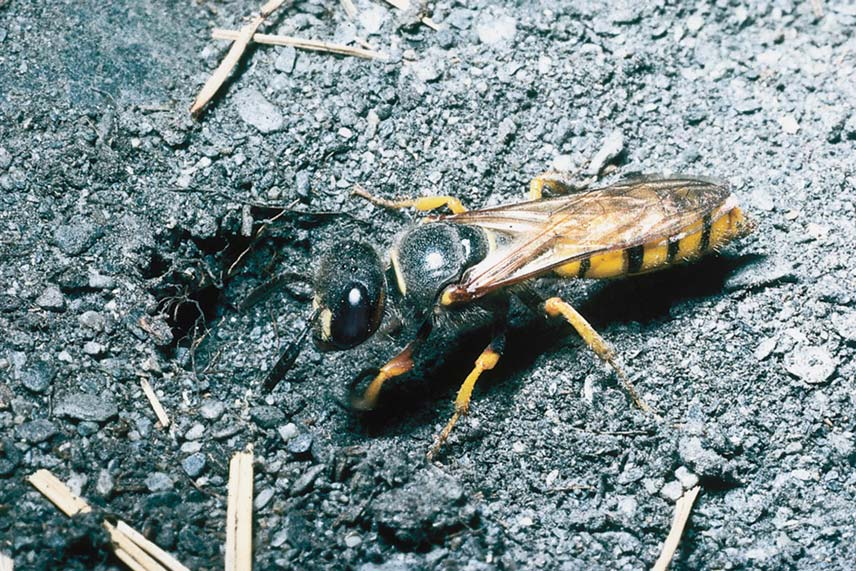
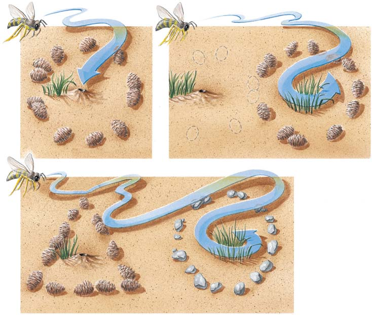
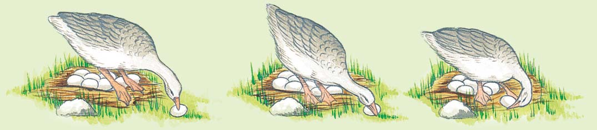
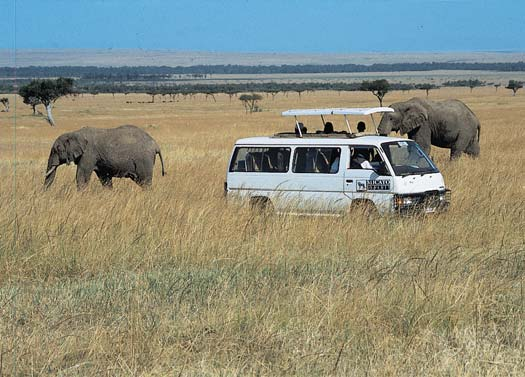
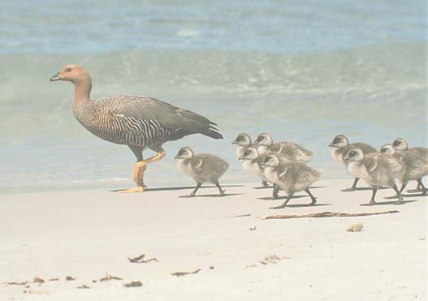
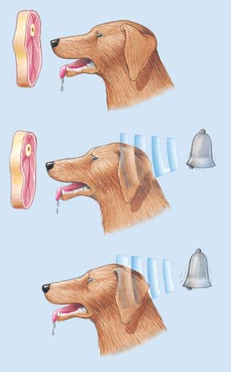
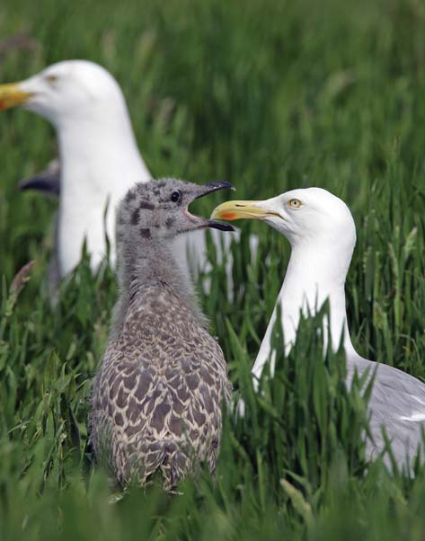
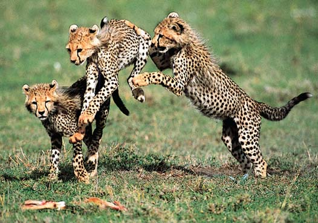
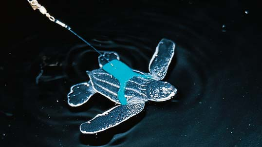

52 Comportamiento animal
1127
CONCEPTOS CLAVE
52.1 Causas próximas del comportamiento son los procesos genéticos, de desarrollo y fi siológicos que explican cómo un animal lleva a cabo una conducta específi ca. Las causas últimas del comportamiento son las explicaciones evolutivas de por qué ocurren ciertas conductas. Si los benefi cios son mayores que los costos, un comportamiento es adaptativo. 52.2 La capacidad para la conducta es heredada, pero es modifi cada en respuesta a la experiencia ambiental; esto se denomina conducta adquirida. Los tipos de conducta adquirida incluyen habituación, impronta, condicionamiento clásico, condicionamiento operante y cognición. 52.3 Los animales exitosos en el aspecto biológico están adaptados fi siológica y conductualmente a los cambios continuos que se llevan a cabo en el entorno. Los relojes biológicos regulan los ritmos biológicos. La migración es un ejemplo de conducta que implica interacciones entre ritmos biológicos, fi siología y ambiente. 52.4 El forrajeo óptimo es la forma más efi caz para que un animal obtenga comida.
52.5 El comportamiento social requiere comunicación entre los animales en el grupo. Las jerarquías de dominancia y la defensa de un territorio benefi cian a muchos grupos sociales. 52.6 La selección sexual es un tipo de selección natural en la que los individuos con ventajas reproductivas son seleccionados de entre otros del mismo sexo y especie. En muchas especies animales, la selección sexual favorece los sistemas de apareamiento polígamo, en los cuales los machos fecundan los óvulos de tantas hembras como pueden durante cada temporada de reproducción. 52.7 El altruismo es un tipo de conducta cooperativa en la que un animal se comporta en una manera que parece benefi ciar a otros, más que a sí mismo. La selección de parentesco es una forma de selección natural que incrementa la aptitud inclusiva (el número de genes que un animal perpetúa en su descendencia más el número de genes que perpetúan sus parientes cercanos) mediante la reproducción exitosa de parientes próximos. 52.8 Algunas especies de aves y mamíferos transmiten cultura, que se defi ne como conducta aprendida común a una población que una generación puede enseñar a la siguiente.
Avispa arenera ( Philantus triangulum ) excavando una madriguera. ¿Cómo sabe la avispa la manera de llevar a cabo el complicado conjunto de conductas que aseguran su éxito reproductivo?
E. S. Ross

1128 Capítulo 52
estaban interesados en las preguntas del cómo . Éstas se refi eren a las causas próximas, como procesos genéticos, de desarrollo y fi siológicos que permiten que el animal lleve a cabo la conducta particular. Actualmente, los biólogos también plantean preguntas sobre los por qué relacionadas con las causas últimas de la conducta. Las preguntas, que tienen respuestas evolutivas, cuestionan por qué ha evolucionado una conducta particular. Las consideraciones fi nales abordan los costos y benefi cios de los patrones de conducta. Cuando se estudian las causas últimas, cabría preguntarse cuál podría ser el valor adaptativo de una conducta particular. La comprensión de la conducta requiere la consideración de las causas próximas y últimas.
Las conductas tienen costos y benefi cios
Los ecólogos del comportamiento usan el análisis de costo-benefi cio para comprender las conductas específi cas. Una conducta puede ayudar a un animal a obtener comida o agua, a protegerse, a reproducirse o a adquirir y mantener un territorio donde vivir. Los benefi cios suelen contribuir a una aptitud directa , que es el éxito reproductivo de un individuo, medido por el número de descendientes viables que produce. La reproducción es, por supuesto, la clave del éxito evolutivo. Las conductas también implican costos. Un comportamiento particular puede tener riesgos. Por ejemplo, mientras un progenitor está de cacería con el fi n de conseguir alimento para su progenie, las crías pueden ser muertas por depredadores. Las conductas también tienen costos de energía y costos de oportunidades perdidas para llevar a cabo otras conductas. Cuando un animal está fuera en busca de alimento, puede perder oportunidades para aparearse. Si los benefi cios son mayores que los costos, una conducta es adaptativa. En consecuencia, la causa última de un comportamiento es incrementar la probabilidad de que los genes de un individuo pasen a las generaciones futuras. Ciertas respuestas pueden llevar a la muerte del individuo mientras incrementan la posibilidad de que copias de sus genes sobrevivan por medio de la producción mejorada o la sobrevivencia de sus descendientes u otros parientes.
Los genes interactúan con el entorno
Los primeros biólogos debatían naturaleza contra crianza; es decir, la importancia relativa de los genes en comparación con la experiencia ambiental. Defi nieron el comportamiento innato (conducta congénita, defi nida popularmente como instinto ) como programado genéticamente y el comportamiento aprendido como el comportamiento que ha sido modifi cado en respuesta a la experiencia ambiental. Más recientemente, los ecologistas del comportamiento han reconocido que no existe una dicotomía verdadera. Toda conducta tiene una base genética. Incluso la capacidad para la conducta aprendida es heredada. Sin embargo, la conducta es modifi cada por el ambiente en que vive el animal; es un producto de la interacción entre la capacidad genética y las infl uencias ambientales. Así, la conducta empieza con un marco de referencia heredado que puede ser modifi cado por la experiencia. Puede pensarse en una gama de conductas, desde los tipos más rígidos programados genéticamente hasta aquellos que, a pesar de tener un componente genético, son ampliamente desarrollados por la experiencia. La avispa arenera Philanthus triangulum , analizada en la introducción del capítulo, lleva a cabo de manera efi caz una serie de conductas que dependen principalmente de la programación genética. Cómo excava su madriguera, cómo la cubre, cómo mata a las abejas; estas conductas están determinadas genéticamente. Sin embargo, algo de su conducta es aprendida. No hay forma de que su habilidad para localizar la madriguera
S
uponga que un profesor le da una jeringa hipodérmica llena de veneno y le solicita encontrar un tipo particular de insecto, uno que usted jamás haya visto antes y que cuenta con defensas activas. Usted debe inyectar los ganglios del sistema nervioso de su presa (acerca del cual nadie le ha enseñado nada) con el veneno justo para paralizarlo pero no matarlo. Tal vez sería difícil realizar estas tareas, pero una avispa solitaria no más grande que una pulgada lo hace con elegancia y precisión quirúrgica, sin ninguna instrucción. La Philantus triangulum , la avispa arenera, atrapa una abeja (o escarabajo), la pica y coloca al insecto paralizado en una madriguera excavada en la arena (vea la fotografía en la página anterior). Luego, la avispa pone un huevo en su presa, que es devorada viva por la larva que sale del huevo. A veces, la P. triangulum lleva provisiones a su madriguera escondida, hasta el otoño, cuando la larva se transforma en una pupa en hibernación. Su descendencia repetirá este comporamiento, ejecutando con precisión cada paso sin jamás haber visto cómo hacerlo. El comportamiento de un animal es lo que hace y cómo lo hace, por lo común en respuesta a estímulos en su ambiente. Un perro puede morder su cola, un pájaro puede cantar, una mariposa puede liberar un atrayente sexual volátil. El comportamiento es tan diverso como la estructura biológica y tan característica de una especie animal como su anatomía o fi siología. Como su morfología y fi siología, la conducta de un animal es producto de la selección natural de fenotipos e indirectamente de los genotipos que codifi can dichos fenotipos. Así, el repertorio del comportamiento de un animal es un conjunto de adaptaciones que lo equipan para sobrevivir en un ambiente particular. Ya sea que los biólogos estudien la conducta en el ambiente natural de un animal o en el laboratorio, deben considerar que lo que un animal hace no puede aislarse de la forma en que vive. La ecología del comportamiento es el estudio del comportamiento en ambientes naturales desde un punto de vista evolutivo. Por más de dos décadas, la ecología del comportamiento ha sido el método principal de los biólogos que estudian la conducta animal. Antes de la aparición de este método, el estudio del comportamiento animal se denominaba etología, y este término todavía se usa algunas veces para referirse al estudio global de la conducta animal. En este capítulo se considera cómo el comportamiento de un animal contribuye a su éxito reproductivo y a la sobrevivencia de su especie. Se estudian los tipos de aprendizaje y luego se enfocan los cómo y los por qué de algunos tipos de conducta, incluyendo la migración, la búsqueda de alimento y el comportamiento social. También se aborda la selección sexual y el comportamiento de ayuda.
52.1 CONDUCTA Y ADAPTACIÓN
OBJETIVOS DE APRENDIZAJE
1 Distinguir entre causas inmediatas y últimas del comportamiento, y aplicar los conceptos de causa última y el análisis de costo-benefi cio para decidir si una conducta particular es adaptativa. 2 Describir las interacciones entre herencia, ambiente y maduración en la conducta animal.
Al considerar el comportamiento reproductivo de la Philantus triangulum , cabría preguntarse cómo lleva a cabo su tarea y por qué se comporta como lo hace. Los primeros investigadores del comportamiento animal
Comportamiento animal 1129
en aspecto sino también en conducta. Una especie usa su pico para transportar pequeños trozos de corteza para construir un nido. Otra especie mete los materiales de construcción de su nido bajo las plumas de su rabadilla. Las aves híbridas nacidas del cruzamiento de ambas especies intentan meter el material bajo su plumaje y luego tratan de llevarlo en el pico, repitiendo el patrón varias veces.
pueda ser programada genéticamente. Debido a que una madriguera sólo puede ser excavada en un sitio idóneo, su localización debe ser aprendida después de su excavación. Cuando la P. triangulum cubre su madriguera con arena, hace estimaciones precisas de su localización al volar sobre el área varias veces antes de salir de caza de nuevo. El ecologista holandés Niko Tinbergen estudió esta conducta de la P. triangulum . Rodeó la madriguera de la avispa con un círculo de piñas de pino como puntos de referencia potenciales ( FIGURA 52-1 ). Antes de que la avispa volviera con otra abeja, Tinbergen reordenó o quitó las piñas. Sin ellas, la avispa no pudo encontrar su madriguera. Cuando Tinbergen colocó las piñas de pino en una zona donde no había madriguera, la avispa hembra respondió como si la madriguera estuviese ahí. Cuando el investigador las retiró por completo, la hembra parecía muy confundida. La avispa pudo encontrar su madriguera sólo hasta que Tinbergen restituyó las piñas de pino en su sitio original. Cuando Tinbergen puso un anillo de piedras en vez de las piñas de pino, la avispa respondió como si la madriguera estuviese en el centro del círculo de piedras. Así, la Philanthus triangulum respondió a la disposición de las piñas de pino, en lugar de a las piñas mismas. Los descubrimientos de Tinbergen demostraron que para la P. triangulum , el aprendizaje de los puntos de referencia que rodean la madriguera era crítico para la localización de ésta. Estudios del cortejo y apareamiento de la mosca de la fruta constituyen ejemplos interesantes de la interacción entre genes y conducta. Antes de que se lleve a cabo el apareamiento, debe ocurrir un ritual que consiste en una secuencia complicada de pasos, casi como un baile. Este ritual de cortejo implica un intercambio de señales visuales, auditivas, táctiles y químicas entre el macho y la hembra. J. B. Hall, de la Universidad Brandeis, y sus colegas identifi caron más de una docena de genes que controlan estas acciones, sugiriendo que la conducta de cortejo es heredada y programada de antemano en gran medida. No obstante, la mosca de la fruta posee la capacidad de aprender de la experiencia, una capacidad que, por supuesto, también es heredada. La interacción entre genes y ambiente ha sido estudiada en muchos vertebrados. Varias especies de tórtolas ( Agapornis sp. ) difi eren no sólo
EXPERIMENTO CLAVE
PREGUNTA: ¿Cómo localiza la avispa Philanthus triangulum su madriguera cuando vuelve para aprovisionarla de comida?
HIPÓTESIS: La P. triangulum usa pistas visuales para localizar su madriguera.
EXPERIMENTO: ● 1 Mientras la P. triangulum estaba en la madriguera, Tinbergen colocó un círculo de piñas de pino alrededor de la entrada. ● 2 Mientras la avispa estaba buscando alimento, Tinbergen movió las piñas a una nueva posición. ● 3 En un segundo experimento, Tinbergen dejó las piñas alrededor de la madriguera, pero las dispuso en forma de triángulo cuando la avispa estaba ausente.
Madriguera Madriguera
Piñas de pino desplazadas a una nueva posición
Madriguera
Piñas de pino dispuestas en triángulo Piedras dispuestas en círculo
2 1
3
RESULTADOS: ● 1 Cuando la P. triangulum salió de su madriguera, respondió al círculo de piñas con un vuelo circular de orientación. Cuando volvió con su presa, voló hacia el centro del círculo de piñas de pino. ● 2 Cuando Tinbergen recolocó el círculo de piñas de pino, la P. triangulum voló hacia el centro del nuevo círculo porque había aprendido la posición de la madriguera en relación con las piñas. ● 3 Cuando Tinbergen reordenó las piñas en forma de triángulo y cerca hizo un círculo de piedras, la P. triangulum voló hacia el centro del círculo de piedras.
CONCLUSIÓN : La Philanthus triangulum usó pistas visuales para localizar su madriguera. Respondió a la disposición de las piñas en lugar de a las piñas mismas. El aprendizaje de los puntos de referencia es crítico para localizar la madriguera.
Fuente: Tinbergen, N. The animal in Its World , vol. 1. Harvard University Press, Cambridge, MA, 1972.
FIGURA 52-1 Experimentos de Niko Tinbergen para determinar cómo la avispa Philanthus localiza su madriguera.

1130 Capítulo 52
pecífi ca de su propia especie. Esto ocurre incluso si el gorrión de corona blanca puede oír el canto de otros gorriones pero no interactúa socialmente con ellos. Con base en estos experimentos, los investigadores han concluido que el gorrión de corona blanca está equipado con un patrón genético primario de su canto, aunque los estímulos acústicos y sociales son importantes para desarrollar su capacidad de emitir su canto específi co.
Muchos patrones de comportamiento dependen de programas motores
Muchas conductas que podrían considerarse automáticas dependen de secuencias coordinadas de acciones musculares denominadas programas motores . Algunos programas motores (por ejemplo, la capacidad de caminar de las gacelas recién nacidas) parecen sobre todo innatos. Otros, como caminar en los bebés humanos, tienen un componente principal aprendido. Un ejemplo clásico de un programa motor en vertebrados es la manera en que el ganso común europeo rueda sus huevos ( FIGURA 52-2 ). Una vez activada por simples estímulos sensoriales, la conducta de rodar el huevo continúa hasta su conclusión independientemente de la retroalimentación sensorial. Hay poca fl exibilidad. Los ecólogos del comportamiento denominan a esta conducta patrón de comportamiento . Ciertos patrones de comportamiento pueden producirse mediante un estímulo signo , o liberador , una simple señal que dispara una respuesta conductual específi ca. Un huevo de madera es un estímulo signo que evoca la conducta de rodar el huevo en el ánsar común. En un conjunto de experimentos clásicos realizados en 1951, Tinbergen demostró que la banda roja en la superfi cie ventral (vientre) de una pez espinoso es un estímulo signo. La superfi cie ventral del pez espinoso macho suele ser plateada pero se vuelve roja al inicio de la época de reproducción. El pez espinoso macho elige un territorio, construye un nido y los defi ende contra machos rivales. Una vez que la hembra desova, se va y deja que el macho cuide los huevos y, después, a los peces recién nacidos. Tinbergen demostró que la banda roja activa una conducta agresiva en un macho cuyo territorio ha sido invadido. Tinbergen encontró que modelos falsos pintados con un vientre rojo tenían mayor probabilidad de ser atacados que modelos más reales sin la franja roja ( FIGURA 52-3 ). La conducta agresiva es activada por el vientre rojo en lugar de por el reconocimiento basado en una combinación de características.
A la larga, la mayoría de las aves transportan el material en sus picos, pero les lleva hasta tres años perfeccionar esta conducta y la mayoría continúa haciendo intentos vanos para trasportar el material en su plumaje. Así, el método de transporte de materiales es heredado pero fl exible de alguna manera. (En la naturaleza, las aves híbridas podrían experimentar una notoria reducción en su aptitud debido al gran retraso en la aparición de las crías).
El comportamiento depende de la preparación fi siológica
Aunque la conducta implica a todos los sistemas del cuerpo, es infl uida sobre todo por los sistemas nervioso y endocrino. La capacidad para la conducta depende de las características genéticas que rigen el desarrollo y las funciones de estos sistemas. Antes de que un animal pueda mostrar cualquier patrón de comportamiento, debe estar listo fi siológicamente para producirlo. Por ejemplo, la conducta reproductiva no suele ocurrir entre las aves o la mayoría de los mamíferos a menos que en su sangre haya una concentración sufi ciente de hormonas sexuales. Un cuerpo humano no puede caminar sino hasta que sus músculos y neuronas están sufi cientemente desarrollados. Estos estados de preparación fi siológica son producidos por una interacción continua con el ambiente. El nivel de hormonas sexuales en la sangre de un ave puede estar determinado por variaciones estacionales en la duración del día. Los músculos del bebé se desarrollan con la experiencia, así como con la edad. Varios factores infl uyen en el desarrollo del canto de los gorriones de corona blanca machos (en general, sólo los machos cantan una canción complicada). Estas aves muestran una variación regional considerable en su canto. Durante el desarrollo temprano, las crías de gorriones suelen escuchar a los adultos macho que cantan la canción distintiva de su población. Los días 10 a 52 después de la eclosión constituyen un período crítico para aprender la canción. Cuando el joven macho ya tiene algunos meses de edad, “practica” la canción durante varias semanas hasta que fi nalmente canta en el “dialecto” local. En experimentos de laboratorio, los pájaros mantenidos en aislamiento y privados de la experiencia acústica de escuchar el canto de machos maduros terminan por cantar una canción defi cientemente desarrollada aunque reconocible de los gorriones de corona blanca machos. Cuando a un joven gorrión de corona blanca macho se le permite interactuar socialmente con un pájaro pinzón fresa (que pertenece a un género diferente de ave), aprende la canción del pinzón en lugar de la que es es-
FIGURA 52-2 Conducta de rodar el huevo en el ánsar común europeo En este patrón de conducta más bien rígido, el ganso alcanza el huevo al extender su cuello y usar su pico para empujarlo hacia el nido. Si el investigador retira rápidamente el huevo mientras el ganso está en proceso de alcanzarlo o rodarlo de vuelta, el ave continúa la conducta hasta su conclusión, como si estuviese empujando el huevo ahora ausente de vuelta al nido

Comportamiento animal 1131
52.2 APRENDIZAJE: EL CAMBIO DE COMPORTAMIENTO COMO RESULTADO DE LA EXPERIENCIA
OBJETIVO DE APRENDIZAJE
3 Analizar la importancia adaptativa de la habituación, la impronta, el condicionamiento clásico, el condicionamiento operante y la cognición.
Con base en lo que se ha analizado hasta ahora, debe ser evidente que mucha de la conducta heredada puede ser modifi cada por la experiencia. El aprendizaje implica cambios persistentes en el comportamiento que resultan de la experiencia. La capacidad de aprender nuevas respuestas a situaciones recientes es adaptativa y permite a los animales sobrevivir ante cambios en su ambiente. Las capacidades para el aprendizaje están sesgadas; parece que la información más importante para sobrevivir es la más fácil de aprender. Una rata puede haber intentado docenas de veces aprender la tarea superfi cial de empujar una palanca para obtener una recompensa. Sin embargo, la misma rata aprende por su propia experiencia cómo evitar alimentos que pueden ser dañinos. Las personas que envenenan ratas para deshacerse de ellas pueden apreciar fácilmente el valor adaptativo de esta capacidad de aprendizaje. Este rápido aprendizaje en respuesta a una experiencia desagradable constituye la base de la coloración de advertencia o coloración aposemática , que se encuentra en muchos insectos venenosos y en huevos de aves coloreados con brillantez pero desagradables al gusto. Una vez que enferman a causa de estos alimentos, los depredadores aprenden rápidamente a evitarlos. En las siguientes secciones se considerarán varios tipos de aprendizaje, incluidos la habituación, la impronta, el condicionamiento clásico, el condicionamiento operante y la cognición.
Un animal se habitúa a estímulos irrelevantes
La habituación es un tipo de aprendizaje en el cual un animal aprende a ignorar un estímulo irrelevante repetido; es decir, uno que ni recompensa ni castiga. Las palomas reunidas en un parque público aprenden por encuentros repetidos sin daño que los humanos no son peligrosos para ellas y se comportan de acuerdo con esto. Dicha conducta las benefi cia. Una paloma intolerante a las personas podría desperdiciar energía volando cada vez que un humano se aproxime y podría no obtener sufi ciente comida. Muchos animales africanos se habitúan a los humanos en safaris fotográfi cos y a los vehículos que los transportan ( FIGURA 52-4 ). Los humanos que viven en zonas urbanas se habitúan al ruido del tránsito. De hecho, muchos pobladores urbanos informan que no duermen cuando visitan una zona rural tranquila.
La impronta ocurre durante un período crítico temprano
Cualquiera que haya visto una mamá gansa con sus crías debe haberse preguntado cómo puede “seguir la pista” de esta horda de criaturas casi idénticas que se tropiezan en el césped, por no hablar de cómo los distinguirá de los de otra gansa ( FIGURA 52-5 ). Aunque la madre puede reconocer su descendencia en alguna medida, básicamente ellos tienen la responsabilidad de seguirle la pista a ella . La sobrevivencia de un ganso requiere que aprenda rápido a distinguir a su madre (proveedora de cuidado) de otros gansos.
Repaso
■ ¿De qué manera son adaptativas las conductas de la Philanthus triangulum , la avispa arenera?
■ Proporcione un ejemplo que muestre que la capacidad para la conducta es heredada y modifi cada por el aprendizaje.
■ ¿De qué manera la preparación fi siológica afecta la conducta innata? ¿Cómo afecta la conducta aprendida?
EXPERIMENTO CLAVE
PREGUNTA: ¿Qué activa la conducta agresiva en el pez espinoso macho?
HIPÓTESIS: La superfi cie ventral roja (vientre) de un pez espinoso macho es un estímulo signo que activa la conducta agresiva en otros peces espinosos machos.
EXPERIMENTO: Niko Tinbergen presentó peces espinosos machos con dos series de modelos. ● 1 Los modelos en la serie neutra eran del color neutro del macho en la estación de no reproducción. ● 2 Los modelos en la serie roja tenían la superfi cie ventral de este color.
1 Modelo neutro
2 Modelos en la serie roja
RESULTADOS: El pez macho no ataca los modelos más reales de otros peces espinosos cuando no tenían el vientre rojo. El pez macho atacó otros modelos, aunque no reales, que tenían rojo el vientre.
CONCLUSIÓN: La conducta agresiva en el pez espinoso macho es activada por el vientre rojo de otros peces machos. El vientre rojo es un estímulo signo, o liberador, de la conducta agresiva.
FIGURA 52-3 Experimentos de Niko Tinbergen sobre la conducta agresiva en el pez espinoso macho
1132 Capítulo 52
los sonidos característicos con los que las crías ya están familiarizadas. Este movimiento y los sonidos producen la impronta. Durante un breve período crítico después de eclosionar, las crías aprenden el aspecto del padre. La impronta en algunos mamíferos depende del olor. Por ejemplo, las musarañas recién nacidas adquieren la impronta del olor de su madre (o de cualquier hembra que los alimente). En muchas especies, la madre también aprende a distinguir a su descendencia durante un período crítico. La madre en algunas especies de mamíferos con pezuñas, como las ovejas, aceptará a su descendencia sólo durante unas pocas horas después de nacer. Si se les separa de la madre durante algún tiempo, las crías son rechazadas por ella. Normalmente, la madre aprende a distinguir a su propia progenie de la de otras madres por medio de pistas olfativas.
En el condicionamiento clásico, un refl ejo se asocia con un nuevo estímulo
En el condicionamiento clásico , se forma una asociación entre alguna función corporal normal y un nuevo estímulo. Si el lector ha observado la conducta de un perro o de un gato, sabe que el sonido de un abrelatas en el momento de comer ¡puede captar la atención de una mascota! A principios de la década de 1920, Ivan Pavlov, un fi siólogo ruso, descubrió que si hacía sonar una campana justo antes de alimentar a un perro, éste aprendía a asociar el sonido de la campana con la comida. A la larga, el perro salivaba incluso si la campana se hacía sonar sin que hubiese comida ( FIGURA 52-6 ). Pavlov denominó al estímulo fi siológicamente signifi cativo (comida, en este caso) estímulo no condicionado . El estímulo normalmente irrelevante (la campana) que se volvió un sustituto de aquél era el estímulo condicionado. La salivación por la comida era una respuesta no con dicio na da, mientras que la salivación por la campana era una respuesta condicio na da. Debido a que un perro normalmente no saliva al sonido de una campana, la asociación era claramente aprendida. También podía ser olvidada. Si la campana dejaba de indicar la comida, el perro terminaba por dejar de responder a ésta. Pavlov denominó extinción a este último proceso. El condicionamiento clásico puede ser adaptativo. Por ejemplo, si un animal es amenazado por un depredador en una zona particular, asocia el sitio con el peligro y evita estar en esa zona en el futuro. En este caso el animal aprende a evitar un estímulo negativo en lugar de esperar una recompensa.
En el condicionamiento operante, la conducta espontánea es reforzada
En el condicionamiento operante , el animal debe hacer algo para obtener una recompensa (refuerzo positivo) o evitar un castigo. El condicionamiento operante ha sido estudiado para muchos animales, entre ellos platelmintos, insectos, arácnidos, aves y mamíferos. En un experimento de laboratorio típico, una rata es colocada en una caja que contiene una barra móvil. Cuando las acciones aleatorias de la rata resultan en presionar la barra, una bolita de comida rueda por una tolva hacia la rata. Así, la rata es reforzada positivamente por haber presionado la barra. Finalmente, la rata aprende la asociación y presiona la barra para obtener comida. En el reforzamiento negativo, la eliminación de un estímulo incrementa la probabilidad de que ocurra una conducta. Por ejemplo, una rata puede estar sometida a un estímulo desagradable, como un choque eléctrico de bajo nivel. Cuando el animal presiona la barra, este refuerzo negativo es retirado. Muchas variaciones de estas técnicas han sido desarrolladas. Una paloma puede ser entrenada para picotear en un círculo iluminado con el fi n de obtener comida, un chimpancé puede aprender cómo realizar ciertas tareas para obtener fi chas que puede cambiar por alimento o un
La impronta , un tipo de aprendizaje social basado en experiencia temprana, ha sido estudiada en algunos mamíferos y en aves. Ocurre durante un período crítico, usualmente a pocas horas o días después del nacimiento (o eclosión). Konrad Lorenz, un médico austriaco y uno de los primeros etólogos, descubrió que un ave recién nacida graba en su mente una impronta del primer objeto móvil que ve, incluso un humano o un objeto inanimado como una esfera o luz de color. Aunque el proceso de impronta está determinado genéticamente, el ave aprende a responder a un animal u objeto particular. Entre varios tipos de aves, especialmente patos y gansos, los embriones de mayor edad pueden intercambiar llamadas con sus compañeros de nido y sus padres a través del cascarón poroso del huevo. Cuando eclosionan, al menos uno de los padres suele estar a la mano, emitiendo
McMurray Photography
FIGURA 52-4 Habituación Después de muchos encuentros seguros con vehículos que transportan humanos en safaris fotográfi cos, muchos animales, entre ellos jirafas, cebras y leones en el Serengueti, aprenden a ignorarlos. Los elefantes suelen ignorar a los vehículos a menos que el conductor los provoque al acercarse demasiado. En ese caso, un elefante puede retar e inclusive arremeter contra el vehículo.
FIGURA 52-5 Impronta Los lazos padre-descendencia suelen formarse durante un periodo crítico temprano. Estas crías tienen su impronta en su madre, una gansa de tierra alta ( Chloephaga picta ).
J. H. Dick/VIREO


Comportamiento animal 1133
recompensados. Sin embargo, el comportamiento de picoteo se vuelve más efi caz con la práctica. Por tanto, una conducta que podría parecer totalmente genética es mejorada por el aprendizaje ( FIGURA 52-7 ).
La cognición animal es controversial
La cognición es el proceso de adquisición de conocimientos; incluye pensamiento, procesamiento de información, aprendizaje, razonamiento y conciencia de los pensamientos, las percepciones y el yo. La cognición permite a los humanos llevar a cabo funciones mentales de alto nivel. Por ejemplo, las personas pueden tomar decisiones difíciles; resolver problemas, incluyendo problemas matemáticos; planear, y desarrollar y comprender idiomas. Qué tan próxima está la cognición animal de los procesos de pensamiento humano es un tema intensamente debatido que constituye el centro de atención de muchas investigaciones. Un tema polémico es si los animales poseen un sentido de conciencia de sí mismos. Algunos animales poseen una forma de cognición denominada aprendizaje perceptivo , la capacidad de adaptar experiencias pasadas que pueden implicar estímulos diferentes para resolver problemas nuevos. Un perro puede ser colocado en un callejón sin salida que debe rodear para encontrar una recompensa. La difi cultad estriba en el hecho de que el animal debe alejarse de la recompensa para obtenerla. En términos generales, el perro se lanza contra la barrera próxima al alimento. Finalmente, por ensayo y error, el perro frustrado puede encontrar la forma de rodear la barrera y alcanzar la recompensa. Al contrario del perro, es probable que un chimpancé colocado en una nueva situación establezca nuevas asociaciones entre las tareas que ha aprendido a hacer previamente con el fi n de resolver problemas
niño puede aprender cómo permanecer en silencio en su silla para obtener el elogio del maestro. El condicionamiento operante desempeña un papel en el desarrollo de algunas conductas que parecen programadas genéticamente. Un ejemplo es la conducta de alimentación de los polluelos de gaviota. Los polluelos de gaviota picotean los picos de los padres, lo que estimula a éstos para regurgitar para aquéllos comida parcialmente digerida. Los polluelos son atraídos por dos estímulos: el aspecto general del pico de los padres con su forma alargada y mancha roja distintivos, así como el movimiento hacia abajo cuando desciende la cabeza del padre. Así como la posibilidad de la rata que presiona la barra, el comportamiento exploratorio inicial de los polluelos es sufi cientemente funcional para permitirles alcanzar su primera comida, aunque desperdician bastante energía en el picoteo. Algunos picoteos están fuera del objetivo y por ello no son
EXPERIMENTO CLAVE
PREGUNTA: ¿Puede un animal aprender a responder de cierta manera a un nuevo estímulo al asociarlo con un estímulo conocido?
HIPÓTESIS: Un perro puede ser condicionado para salivar al escuchar el sonido de una campana.
EXPERIMENTO: Ivan Pavlov presentó comida (el estímulo no condicionado) a un perro y observó que el perro salivaba (respuesta no condicionada). Luego, hacía sonar una campana antes de darle de comer al perro. Repitió esto varias veces. Luego hacía sonar la campana en ausencia de comida.
Salivación
Campana
El perro saliva cuando se le da comida.
La campana suena justo antes que se le dé comida al perro. Esto se repite varias veces.
A la larga, el perro saliva cuando la campana suena sola.
1
2
3
RESULTADOS: El perro fue condicionado para salivar al oír la campana sola.
CONCLUSIÓN: Cuando una campana (estímulo condicionado) se asocia con comida (un estímulo no condicionado), un animal aprende a asociarlos. Luego, el animal saliva al sonido de la campana sola (respuesta condicionada).
Fuente: Pavlov I. P. Conditioned Refl exes: An Investigation of the Physiological Activity of the Cerebral Cortex (traducido por G. V. Anrep). Oxford University Press, Londres, 1927.
FIGURA 52-6 Condicionamiento clásico: el perro de Pavlov
FIGURA 52-7 Condicionamiento operante Cuando la cría del alcatraz picotea en el pico de su padre, es reforzado positivamente con comida. Después de muchos intentos, la cría aprende a ser más precisa al pedir comida al padre.
ARCO/J. De Cuveland


1134 Capítulo 52
juegan ( FIGURA 52-9 ). Pueden mejorar su habilidad para escapar, cazar, matar presas o desempeñar una conducta sexual. Jugar puede ser un ejemplo de condicionamiento operante en acción. Las hipótesis de las causas últimas de la conducta de juego incluyen el ejercicio, el aprendizaje para coordinar movimientos y adquirir habilidades sociales. Por supuesto, podría haber otras explicaciones desconocidas.
Repaso
■ ¿De qué manera es adaptativa la impronta?
■ ¿En qué forma es adaptativo el condicionamiento operante?
52.3 RESPUESTAS CONDUCTUALES A ESTÍMULOS AMBIENTALES
OBJETIVOS DE APRENDIZAJE
4 Proporcionar ejemplos de ritmos biológicos y describir algunos de los mecanismos fi siológicos responsables de aquéllos. 5 Analizar costos y benefi cios de la migración, y distinguir entre orientación y navegación direccionales.
Los animales biológicamente exitosos están fi siológica y conductualmente adaptados a los continuos cambios que ocurren en el ambiente. Considere las muchas variaciones que ocurren en su ambiente natural: ciclos de día y noche, cambios en la longitud del día con estaciones variables, ciclos lunares, mareas altas y bajas, cambios climáticos y variaciones en la cantidad y distribución de alimentos. Las respuestas bioquímicas, fi siológicas y conductuales de los animales ante los cambios periódicos en el ambiente se denominan ritmos biológicos .
Los ritmos biológicos regulan muchas conductas
Los biólogos han identifi cado muchos tipos de ritmos biológicos, incluidos ritmos diarios, mensuales y anuales. Entre muchos animales, ciclos fi siológicos como las fl uctuaciones en la temperatura del cuerpo y la secreción de hormonas son rítmicos. Por ejemplo, la temperatura del cuerpo humano sigue una curva diaria típica con la temperatura más baja temprano en la mañana y la máxima al fi nal del día. (Las mujeres también tienen un ritmo de temperatura mensual con la máxima temperatura corporal durante la segunda mitad del ciclo menstrual). Los ritmos biológicos controlan varias conductas, entre ellas actividad, sueño, alimentación, ingesta de líquidos, reproducción y migración. La conducta de muchos animales, como las actividades de muchas plantas, está organizada alrededor de los ritmos circadianos (que signifi ca “aproximadamente de un día”), que son ciclos diarios de 24 horas de actividad. Los animales diurnos , como las abejas y las palomas, son más activos durante el día. La mayoría de los murciélagos, polillas y gatos son animales nocturnos , que son más activos durante las horas de oscuridad. Los animales crepusculares, como muchos mosquitos y cangrejos violinistas, están más activos en el amanecer o en el ocaso, o ambos. En términos generales, hay razones ecológicas que explican estos patrones. Por ejemplo, si la comida de un animal es más abundante temprano por la mañana, su ciclo de actividad debe estar regulado de modo que se vuelva activo poco después del amanecer. Algunos ritmos biológicos de los animales refl ejan el ciclo lunar . Los ritmos más sorprendentes son los de los organismos marinos que están sintonizados con cambios en las mareas y en las fases de la luna. Por ejemplo, una combinación de ritmos de la marea, lunares y anuales rigen
( FIGURA 52-8 ). Los primates son especialmente hábiles para aprender a discernir, aunque parece que también algunos otros mamíferos y algunas aves, notablemente los cuervos, tienen esta capacidad en alguna medida.
Jugar puede ser una práctica conductual
Tal vez el lector haya observado a un gatito abalanzarse sobre una hoja muerta, o morder o lanzar un zarpazo a un compañero de camada sin causarle daño. Muchos animales, especialmente aves y mamíferos jóvenes, parecen practicar patrones adultos de comportamiento mientras
FIGURA 52-8 Cognición Enfrentado al problema de alcanzar la comida suspendida del techo, un chimpancé puede acudir a experiencias pasadas para resolver el problema. Cuando se les proporcionan cajas, muchos chimpancés las apilan hasta que pueden subir y alcanzar la comida. ¿Qué experiencia anterior podría estar aplicando el chimpancé a esta nueva situación?
FIGURA 52-9 Cachorros de guepardo jugando Jugar puede servir como medio para practicar la conducta que más tarde será útil en la vida, posiblemente para cazar, pescar, pelear por territorio o competir por parejas.
BIOS/Peter Arnold, Inc.

Comportamiento animal 1135
animales que recorren grandes distancias. Los ecólogos del comportamiento defi nen la migración como un viaje periódico de larga distancia de un sitio a otro. Muchas migraciones implican hazañas asombrosas de resistencia y navegación. ¿Por qué migran los animales? Las causas últimas de la migración implican aparentemente la ventaja de moverse de un área que estacionalmente se vuelve menos hospitalaria a una región con mayor probabilidad de resistir la reproducción o la sobrevivencia. Los cambios estacionales incluyen cambios de clima, disponibilidad de recursos alimentarios y sitios seguros para anidar. Por ejemplo, cuando se aproxima el invierno, muchas aves migran a regiones más templadas. Las causas próximas de la migración incluyen señales del ambiente que activan respuestas fi siológicas que llevan a la migración. En las aves migratorias, por ejemplo, la glándula pineal percibe cambios en la duración del día y luego libera hormonas que producen una conducta inquieta. Las aves muestran un incremento en la disposición para volar y para hacerlo durante largos períodos.
La migración tiene costos y benefi cios
Un ejemplo interesante de migración es el viaje anual de millones de mariposas monarca ( Danaus plexippus ) desde Canadá y Estados Unidos continentales hasta México, un recorrido de 2520 km para algunas. Su notable migración anual parece estar relacionada con la disponibilidad de plantas de algodoncillo en las que las hembras desovan. Al eclosionar, las larvas (orugas) se alimentan con las hojas de la planta de algodoncillo. En regiones frías estas plantas mueren a fi nales del otoño y vuelven a crecer con el clima templado de la primavera. Los destinos invernales de las mariposas monarca también pueden estar determinados por la temperatura y humedad. Algunos benefi cios posibles incluyen la oportunidad de invernar en un área que ofrece comida abundante, temperaturas no congelantes y aire húmedo. Así, la inversión hecha por las mariposas monarca migratorias en su largo viaje aumenta sus posibilidades de sobrevivir en el invierno. Los benefi cios de la migración no vienen sin costo en tiempo, energía e inclusive sobrevivencia. Muchas semanas pueden emplearse cada año en viajes que demandan energía. Algunos animales pueden perderse o morir por fatiga o depredación durante el viaje. Cuando están en áreas desconocidas, los individuos migratorios a menudo están en mayor riesgo por parte de los depredadores. En años recientes, las actividades humanas han interferido con la migración de muchos tipos de animales. Por ejemplo, después de millones de años de éxito biológico, la sobrevivencia de las tortugas marinas está amenazada por redes de pesca y camaroneras en las que pueden enredarse. Como resultado, miles de tortugas migratorias se ahogan cada año. Las tortugas marinas también mueren como resultado de derrames petroleros y por la ingestión de bolsas de plástico fl otantes que confunden con medusas.
Los animales encuentran su camino usando orientación y navegación direccionales
¿Cómo encuentran su camino los animales migratorios? El término orientación direccional se refi ere a viajar en una dirección específi ca. Viajar en línea recta hacia un destino requiere un sentido de dirección o un sentido de brújula . Muchos animales usan el Sol para orientarse. Debido a que éste parece moverse por el cielo cada día, un animal debe tener un sentido del tiempo. Parece que los relojes biológicos perciben el tiempo y regulan los ritmos circadianos. La navegación es más complicada, ya que requiere un sentido de brújula y un sentido de mapa , que es una “conciencia” de la ubicación. La
la conducta reproductiva del gruñón, un pequeño pez que vive en la costa del Pacífi co en Norteamérica. Los gruñones forman bancos desde abril hasta junio en esas tres o cuatro noches cuando ocurren las mareas más altas del año. Precisamente en el punto alto de la marea, el pez serpentea en la playa y deposita huevos y esperma en la arena. Regresan al mar con la siguiente ola. Al momento en que la siguiente marea alcanza esa porción de la playa 15 días después, las crías de peces han eclosionado en la arena húmeda y están listas para entrar al mar. Esta sincronización puede ayudar a proteger los huevos del pez de depredadores acuáticos. Los procesos metabólicos y conductas de un animal suelen estar sincronizados con los cambios cíclicos en su ambiente externo. Su conducta anticipa estos cambios regulares. Los pequeños cangrejos violinistas de las playas marinas emergen de sus madrigueras con la marea baja para realizar actividades sociales como disputas territoriales. Para evitar ser arrastrados por el agua, deben regresar a su madriguera antes de que vuelva la marea. ¿Cómo “saben” los cangrejos que la marea alta está por ocurrir? Podría suponerse que los cangrejos reconocen pistas presentes en la orilla del mar. Sin embargo, cuando los cangrejos están aislados en el laboratorio lejos de muchos estímulos conocidos que podrían relacionar con el tiempo y la marea, sus ritmos conductuales característicos persisten. Muchos ritmos biológicos están regulados por mecanismos de sincronización internos que funcionan como relojes biológicos . Como se ilustra con los cangrejos violinistas, estos mecanismos de sincronización no responden simplemente a pistas ambientales, sino que son capaces de sostener ritmos biológicos de manera independiente. Estos relojes internos han sido identifi cados en la mayoría de los eucariotas, así como en algunas bacterias. Los biólogos moleculares han demostrado que los genes controlan los relojes biológicos. En la Drosophila, siete genes producen proteínas reloj que parecen interactuar en ciclos de retroalimentación en muchos tipos de células tanto dentro como fuera del sistema nervioso. Los investigadores han identifi cado genes y proteínas semejantes en muchos grupos animales, incluidos los mamíferos. El reloj principal está ubicado en áreas específi cas del sistema nervioso central. En los mamíferos, el reloj maestro se localiza en el núcleo supraquiasmático ( NDQ ) en el hipotálamo (vea el capítulo 42). Este reloj NSQ genera ciclos aproximados de 24 horas incluso sin contar con información del entorno. Sin embargo, los ciclos generados por el NSQ son ajustados normalmente cada día con base en información visual recibida desde la retina. Las señales provenientes de la retina que refl ejan cambios en la intensidad de la luz ajustan los ritmos circadianos internos con ciclos de luz-oscuridad en el entorno. El NSQ envía señales rítmicas, en forma de neuropéptidos, a la glándula pineal , una glándula endocrina situada en el cerebro. En respuesta, la glándula pineal secreta melatonina , una hormona que promueve el sueño en los humanos. Genes reloj en el NSQ son encendidos y apagados por las mismas proteínas que codifi can, estableciendo bucles de retroalimentación cuyo ciclo es de 24 horas. Además del reloj maestro, la mayoría de las células cuentan con mecanismos de sincronización que usan muchas de las proteínas del mismo reloj. Estos relojes periféricos pueden funcionar independientemente del NSQ.
Las señales ambientales activan respuestas fi siológicas que llevan a la migración
Los colibrís pecho de rubí cruzan la gran distancia del Golfo de México dos veces al año y las golondrinas de mar oscuras viajan por todo el Atlántico Sur desde África para llegar a la pequeña isla donde están sus áreas de apareamiento en el sur de Florida. Aves, mariposas, peces, tortugas de mar, ñus, cebras y ballenas se encuentran entre los muchos
1136 Capítulo 52
aprender patrones de constelaciones y usarlos para orientarse durante su migración. Los investigadores han observado durante mucho tiempo que algunas especies de aves navegan incluso cuando el cielo está nublado y no pueden ver las estrellas. Suponen que estas aves usan el campo magnético de la Tierra para navegar. Estudios sobre las currucas de jardín indican que a medida que viajan desde Europa Central hasta África cada invierno, navegan tanto por las estrellas como por el campo magnético de la Tierra. Las currucas usan las estrellas para determinar la dirección general del viaje y luego emplean la información magnética para refi nar y corregir su curso. Además de las aves y las tortugas de mar, las abejas, algunos peces y otros animales son sensibles al campo magnético de la Tierra y lo usan como guía.
Repaso
■ ¿Por qué es adaptativo para algunas especies ser diurnas, pero para otras lo es ser nocturnas o crepusculares?
■ ¿Cuál es la diferencia entre orientación y navegación direccionales?
52.4 COMPORTAMIENTO DE FORRAJEO
OBJETIVO DE APRENDIZAJE
6 Defi nir comportamiento de forrajeo óptimo y explicar de qué manera es adaptativo.
El comportamiento de alimentación, o forrajeo , implica la localización y selección de alimento, así como su recolección y captura. Algunos ecólogos del comportamiento estudian los costos y benefi cios de buscar y seleccionar ciertos tipos de comida, así como los mecanismos usados para localizar presas. Por ejemplo, han evolucionado muchas estrategias de camufl aje que difi cultan la detección de presas potenciales. A medida que los depredadores tienen éxitos repetidos en la localización de presas de especies particulares, se cree que han desarrollado una imagen de búsqueda, una constelación de pistas que les ayuda a identifi car presas ocultas. ¿Por qué los osos grizzli pasan varias horas excavando madrigueras de ardillas de tierra árticas e ignoran presas más grandes como el caribú? Resulta más efi ciente desde el punto de vista energético excavar en busca de ardillas porque es más probable que los esfuerzos del oso se vean recompensados, mientras que es más posible que el caribú escape, dejando hambriento al oso. Éste es un ejemplo de forrajeo óptimo , la manera más efi caz para que un animal obtenga comida. Según la teoría de forrajeo óptimo, cuando los animales forrajean, maximizan su ingesta de energía por unidad de tiempo de forrajeo. Cuando los animales maximizan la energía obtenida por unidad de tiempo de forrajeo, pueden maximizar su éxito reproductivo. Muchos factores, como evitar a los depredadores mientras se forrajea, deben ser considerados al determinar las estrategias efi cientes u óptimas. En hábitats donde los productos alimenticios más preferidos son abundantes y un animal no requiere viajar lejos para obtenerlos, los animales pueden darse el lujo de ser selectivos. Por el contrario, la estrategia óptima en hábitats pobres, donde se tarda más en encontrar los mejores productos alimenticios, consiste en seleccionar los artículos menos preferidos. Los animales deben aprender a forrajear efi cientemente por medio de condicionamiento operante; es decir, al intentar de manera aleatoria varias estrategias y elegir la que esté asociada con la obtención de más recompensas (y con el menor número de ataques de hambre al fi nal del día). El forrajeo también es afectado por el riesgo de depredación que corre el forrajero. El biólogo británico Guy Cowlishaw estudió el comportamiento de forrajeo en una población de babuinos en Namibia. Encontró
navegación implica el uso de pistas para cambiar de dirección cuando es necesario llegar a un destino específi co. Al navegar, un animal debe integrar información respecto a la distancia y el tiempo, así como la dirección. Pruebas de ADN confi rman que tortugas caguama que eclosionan en playas de Florida en el Atlántico nadan cientos de kilómetros por el océano para llegar al mar Mediterráneo, una zona rica en comida. Varios años después, las que sobreviven para convertirse en adultas se aparean y las hembras nadan de regreso, a menudo a la misma playa, para desovar. Sus recorridos requieren tanto el sentido de brújula como el sentido de mapa. El biólogo marino Kenneth Lohmann, de la Universidad de Carolina del Norte, colocó arneses conectados a un brazo giratorio en el centro de un gran tanque a tortugas recién nacidas ( FIGURA 52-10 ). Una computadora conectada al brazo giratorio registró los movimientos natatorios de las tortugas. Mediante la manipulación de luz y campos magnéticos, Lohmann demostró que estas dos pistas ambientales son importantes en la migración de las tortugas. Éstas nadaron hacia el este hasta que Lohmann invirtió el campo magnético, entonces invirtieron su dirección de natación hacia el nuevo “este magnético”, que en realidad era el oeste. Investigaciones recientes sugieren que las tortugas jóvenes usan la dirección de las olas para ayudarse a establecer una dirección magnética de preferencia. Algunos biólogos sospechan que las tortugas también usan su sentido del olfato para guiarse, en particular para dirigir a las hembras hasta la misma playa para desovar. De manera semejante, el salmón adulto usa los olores únicos de corrientes diferentes como ayuda para encontrar su camino de regreso a la misma corriente en la que eclosionó. Las aves y algunos otros animales que navegan de día dependen de la posición del Sol (la estrella local); los que viajan de noche usan las estrellas para guiarse. Cuando un pájaro ve los patrones estelares en el fi rmamento nocturno, busca volar en la dirección de migración idónea de su especie, incluso si no ha tenido la oportunidad de aprender esta hazaña de otras aves. Estudios dirigidos por Stephen Emlen, de la Universidad Cornell, demostraron que los pinzones índigo jóvenes aprenden las constelaciones usando la posición de la Estrella Polar como su punto de referencia. (En el hemisferio Norte, las otras estrellas parecen girar alrededor de la Estrella Polar.) Cuando Emlen reagrupó las constelaciones en el cielo de un planetario, las aves aprendieron el patrón modifi cado y después intentaron volar en una dirección consistente con el patrón artifi cial. Éstos y otros estudios sugirieron que las aves poseen la capacidad genética de
FIGURA 52-10 Navegación por luz y campo magnético Para estudiar la navegación de las tortugas, el investigador Kenneth Lohmann colocó arneses en tortugas lomo de cuero ( Dermochelys coriacea ), como ésta recién nacida y los conectó a una computadora que registraba su dirección de natación.
Kenneth Lohmann

Comportamiento animal 1137